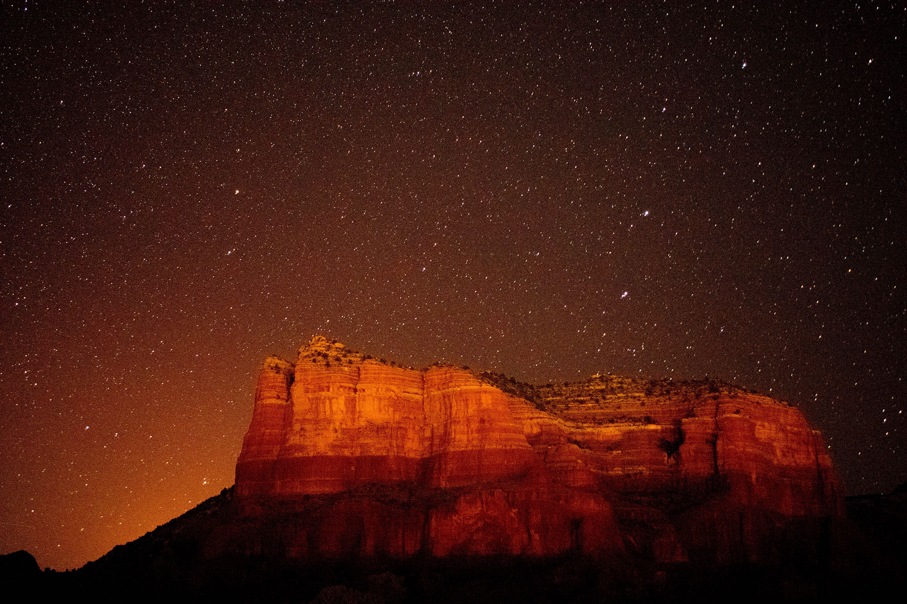

The southwest is often associated with high temps, dry climate and well, tumbleweeds, thanks to Hollywood. Arizona is a state that you may have glanced over a time or two, but deep in its northern reaches, about 30 miles shy of Flagstaff and encircled by the Coconino National Forest, you’ll find Sedona. Sure, this is the desert (the Upper Sonoran, to be exact), but it’s so much more than barren landscape. Here’s why this naturally beautiful adventure haven should be your next weekend getaway.
Driving into Sedona on the I-17 fills one with a sense of wonder. Cacti tower like trees, and densely populate the sandy hills for miles. Out of nowhere, majestic red rock formations reveal themselves mid-way along the two-hour, 120-mile drive from Phoenix, unveiling what’s in store once you enter the heart of Sedona. Phoenix is the closest major hub and an easy jumping off point for your Sedona getaway. Flagstaff Pulliam AirportOpens a New Window. is also an option, offering limited flights from Phoenix, and landing you a 40-mile drive away from Sedona through the insanely scenic Oak Creek Canyon.
Sedona is chock-full of places to stay, that range from cozy inns, modern boutique hotels and a whole bunch of eclectic, homey Airbnb optionsOpens a New Window.. Staying in Uptown Sedona will place you closer to Oak Canyon, state parks and campgrounds, while staying south of the town center means closer access to some well-recognized spots like Bell RockOpens a Bell Rock
Navigating the 18 square miles that is Sedona proper can be done by car, bike and (for many parts of the town) by foot. You’ll need a car if you’re looking to explore outside of town – a vast landscape of sky-high rock formations, interconnected trails and miles upon miles of wild terrain to explore. While some hotels and private lodging offer complimentary bikes, you may want to look into a rental. Depending which side of town you are staying on, Over The Edge as does the bike shop on Route 89-A near the Sedona Airport has some great options, as does Bikes and Beans. on Route 179 – and you can fuel up with a cup of coffee, too.
 Back to Course Home Page